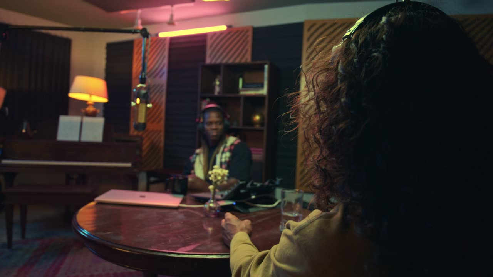

Reelsovar
Мои записи /
Подкаст о росте канала
1:12:40
Осталось
18 из 25 мин

9:16, говорящий в кадре
14:02 / 1:12:40
Вся запись
14 моментов
0:00
18:00
36:00
54:00
1:12:40
Что искать
Найти ещё
где гость спорит
смешные моменты
цифры и факты
советы